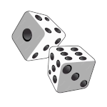

Many games involve rolling two dice and adding them together.

Generate two random numbers from 1 to 6. Add them together to get a number from 2 to 12. Display the total.
Make a random number between 1 and 10. Then ask the user to guess the number.
Give the user 4 guesses to get the right answer.
After each guess, display a message: too high, too low or correct.
Generate two random numbers from 1 to 6 and add them together to get a number from 1 to 12.
Do this 100 times. Use an array to count how often you get each answer.
Display a percentage for how often you got each result.
Higher and lower is a game played with 10 cards numbered 1 to 10.
The player turns over the first card. Then they must guess whether the next card will be higher or lower. At the end, the player gets a score out of 9.
Implement this game in Python.